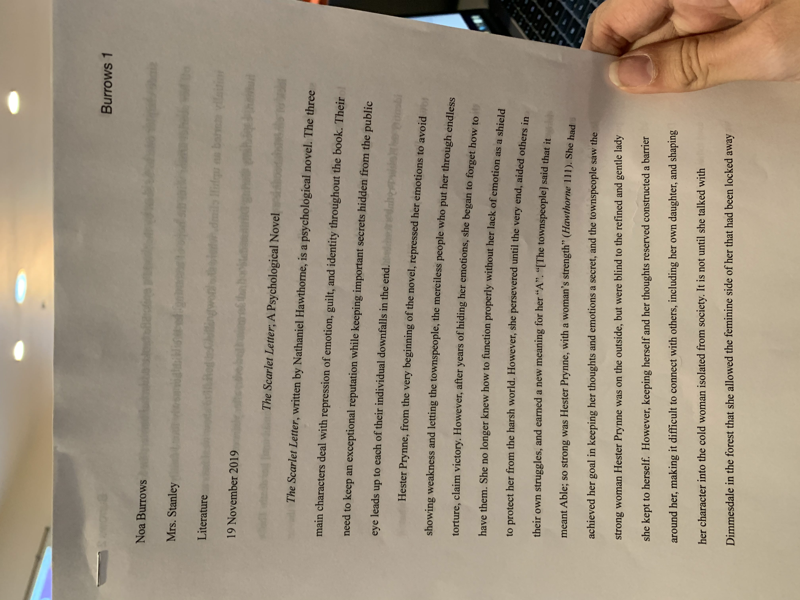

This is my Scarlet Letter poem assignment. I got a 90% on it. It is evidence of my strength, and how I can write poems without rhyming, and still get a good grade. I normally write poems that rhyme, so I stepped out of my comfort zone and still did the best that I could do. It is evidence of me improving on my stretch, and adapting to something new and challenging.
The Scarlet Letter Essay

This is my The Scarlet Letter essay. I got 100% on this, which reaches my SMART Goal. This essay shows my ability to understand the prompt, and analyze the book to support my claim. This also shows how I am able to think deeper than what's obvious and use symbolism and recurring themes to support my claim.